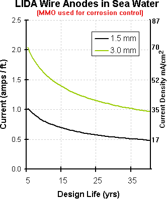

Corrosion control MMO Anodes
The following is from Lida Products
http://www.lidaproducts.com
MIXED METAL OXIDE ANODES
The name "mixed metal oxide anodes" is justifiably confusing to many who hear the term for the first time.
One may begin the understanding mechanism by dropping back to the 1960's. During this period, investigators began to focus attention away from platinum coated anodes to the oxides of the platinum group metals. The Periodic Table of Elements found in chemistry text books identify the platinum - type metals within Groups IV and VIII. One of the unique properties of many of the oxides of these metals is their ability to show near - metallic conductivities. As research progressed it was found that mixtures of these metal oxides showed even more unique properties with regard to electrochemical requirements such as potential and low consumption rate. The term mixed metal oxide soon became a by word when referring to this technology.
Physically, the mixed metal oxides referred to above have little strength or structural integrity of their own. In order to become useful, they must reside on or be placed upon a suitable metal substrate. Once again, history was re-visited by way of the platinum coated anode technology.
This earlier technology had shown "film forming metals" such as titanium to be an ideal candidate as a base for the mixed metal oxides. Pure titanium is naturally protected by a thin, tightly adherent oxide film which is acid tolerant and resistant to the passage of current in the anodic direction. Expressing this differently, in order for titanium to behave as an anode, considerable applied voltage is required on its surface in order for it to pass a significant amount of current. This property has earned titanium the title as one of the "electrochemical valve metals."
The mixed metal oxides now come into play once more. Some of the mixed oxides (ruthenium, iridium tantalum, etc.) have the ability to form a solid solution with the oxide film on titanium and render it conductive. Now, a composite anode has been formed which consists of an inert conductive oxide coating on a "valve metal" titanium base. The electrochemical characteristics of this anode rests within the mixed metal oxide coating; the anode strength resides within the titanium substrate.
An advantage of titanium as a coating base for the mixed metal oxides is its "self healing" property. If there is a defect or holiday in the conductive coating, the valve metal immediately forms its protective oxide over the exposed area. Current from the anode continues to come from the surface covered by the mixed metal coating.
The mixed oxides are formed by spraying aqueous salts of the metals on to the titanium substrate and then heating the titanium to temperature of several hundred degrees Celsius.
Below is a graph of Lida Products 3mm Dia. MMO wire.

http://www.telprocompanies.com
TELPRO MIXED METAL OXIDE COATING
TELPRO Mixed Metal Oxide Coating has been designed for use in all cathodic protection applications. TELPRO coating consists of IrO2/Ta2O5 and is suitable for use in soils, carbonaceous backfill, fresh and brackish water, seawater and concrete. Mixed metal oxide coating is generally accepted by the cathodic protection industry to be satisfactory for both chlorine and oxygen evolving electrolytes.
Based on accelerated life testing conducted by an independent laboratory, TELPRO MMO coating has proven to be superior to other mixed metal oxide coatings currently being used. A copy of this test report is available upon request.
Strict quality control procedures are followed throughout the coating process to insure proper coating adhesion and loading. Production of a quality product is fundamental in every step of the manufacturing process.
The operating characteristics for TELPRO MMO coating loadings are shown below:
| Environment | Maximum Current Density | Lifetime |
| Carbonaceous Backfill | 4.6 A/ft2 (50A/m2) | 20 years
|
| Calcined Petroleum | 9.3 A/ft2 (100A/m2) | 20 years
|
| Backfill | 9.3 A/ft2 (100A/m2) | 20 years |
|
Fresh Water | 9.3-27.8 A/ft2 (100-300A/m2) | 20 years
|
| Brackish Water | 55.8 A/ft2 (600A/m2) | 20 years
|
HIT THE BACK BUTTON ON YOUR BROWSER
BACK TO TOP